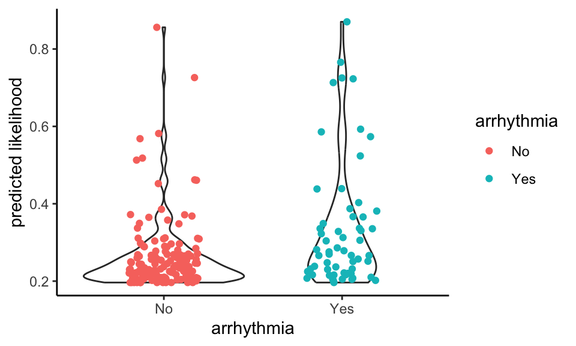

Detecting arrhythmia from exercise data (DRAFT)
ABSTRACT
Introduction
This study explores the feasibility of using heart rate data as frequently captured by keen amateur cyclists during exercise to detect the presence of heart rhythm problems.
Methods
Data is gathered from an existing project that is used by over 1,000 (mainly) amateur athletes to compare the cardiac stress accrued through exercise with that of their anonymised peers. “Gappiness” in observed heart rate levels is defined and its frequent presence at the top end of the heart rate range is tested for association with athlete reports of arrhythmia obtained through a survey.
Results
In an analysis of over 130,000 activities from 189 athletes who responded to the survey, a statistically significant association was found between observed heart rate gappiness and reported arrhythmia, both in a point-biserial correlation check (p-value = 0.005) and a logistic regression (p-value = 0.01).
Discussion
This association has a specificity of 97.6% and a positive predictive value of 62.5%. For an athlete for whom this predicts arrhythmia it would be worthwhile to seek a medical consultation. However, the sensitivity is low so a failure to predict arrhythmia is no reassurance that there is in fact no heart rhythm issue. This is to be expected as we only know whether survey respondents report having or having ever had a heart rhythm problem. Some of those who report a problem may have been treated prior to recording the activities analysed and conversely for others the onset may have been recent so many of their recorded activities may pre-date the condition. We surmise that heart rate readings recorded using chest straps are more likely to detect arrhythmia with this method than those recorded with smart watches measuring heart rate optically at the wrist; we note that cyclists more frequently use the former and runners the latter.
Conclusion
Heart rhythm problems are increasingly observed in people who engage in high levels of endurance sports over many years, especially cyclists. A technique that can sometimes detect arrhythmia using data already collected during sport is therefore of potential merit. Further investigation, including into the evolution of changes in gappiness before, during and after the onset of heart rhythm problems as well as the extension to a wider pool of athletes, would appear to be worthwhile.
INTRODUCTION
People who regularly engage in endurance sports activities such as cycling and running accrue from them a wide range of health benefits. However, there is also increasing evidence that people, especially men, who participate in high levels of such sports over many years have an elevated likelihood of developing heart rhythm problems such as atrial fibrillation (Christoper Case 2017); (Centurión 2019); (Calvo 2016). This is particularly well-documented for cyclists (Baldesberger 2008). We may surmise, although it has no bearing on our analysis, that this could arise in part from the fact that, unlike other endurance athletes, cyclists regularly engage in sessions of high cardiac intensity lasting a number of hours during which the unfelt strain on the heart is not accompanied by a felt and fatiguing strain on skeletal muscles, owing to the mechanical advantage of being on a bike. Early diagnosis of arrhythmias is considered important and can improve clinical outcomes (Amara 2015); (Kirchhof 2009).
Increasingly wearable devices are being used to detect arrhythmias (Marco V. Perez 2019); (Tison et al. 2018). It is now commonly the case that keen endurance athletes will use a device such as a smart watch or a bike computer with a chest strap to measure their heart rate during exercise and record this activity on a sports website such as Strava (www.strava.com), TrainingPeaks (www.trainingpeaks.com) or Garmin Connect (https://connect.garmin.com). We hypothesized that it would be possible to detect arrhythmias by an analysis of saved heart rate data. We therefore looked for irregularities in heart rate, as detected by smartwatches and chest straps during exertion, to see whether they occured more frequently in athletes who self-reported heart rhythm problems.
In observing the heart rate response of athletes wearing chest straps to effort during exercise, we note that at the highest effort heart rates increase towards the highest value, and in a hard session the heart rate will generally rise smoothly to the maximum value at around the time of greatest effort (studying both heart rate and power data shows that the heart rate usually lags effort by around 20 to 30 seconds). The highest heart rate levels vary by athlete and are generally in the order of 200 beats per minute (bpm). (The rule of thumb that maximum heart rate = 220 - age does not account well for the seasoned athletes we have studied - see appendix, Analysis of strap artefacts seen in heart rate readings and also (Hirofumi Tanaka 2001).) However, with unexpected frequency we also sometimes observe a jumpiness at the top end of the heart rate chart. This can either be seen as a gap of a few beats per minute - say from 190 bpm to 195 bpm - or as a jump to a far higher value - say 254 bpm.
It is tempting to say that these readings, especially in the latter category of large jumps to high values, are simply strap errors; and they evidently sometimes are. However, we hypothesise that they can nonetheless be informational. The chest strap is, like an ECG, continuously sampling current in the heart muscle, which it algorithmically converts into an instantaneous heart rate reading. The frequency of sampling and the algorithm for translating the electrical signal into a bpm reading are proprietary and held as secrets by equipment manufacturers. Nonetheless, we may surmise that the pattern of measured current from an athlete who is, for example, undergoing ectopic beats or exhibiting anomalous electrical activity in the heart might be expected to cause irregularity in the heart rate reported by the strap. We therefore look for such irregularities to see whether they occur more frequently in athletes who report heart rhythm problems. If they do and if we are able to establish a meaningful association, we may be able to alert athletes to seek a medical consultation as soon as such a pattern becomes evident.
METHODS
Data acquisition
The data that is used in this study is from the Crickles project, whose purpose is to collect data from amateur endurance athletes and analyse the extent of “cardiac stress” accrued through activities such as cycling and running. Data from athletes who sign up to Crickles is collected from the popular website Strava.com. Athletes who wish to participate in the Crickles project enroll by hitting the Connect with Strava button on the website http://crickles.org. This authorises the Crickles software to access the athlete’s data. Crickles then does an initial load of some years of historical data and adds the athlete to the ongoing update.
Crickles performs a range of analyses on this data, the results of which are securely stored on Crickles AWS Cloud servers. Each athlete can access analysis on their own activities in comparision with the anonymised data of all other Crickles participants through the Crickles Navigator website http://navigator.crickles.org.
Throughout this paper the term “activity” is used in the natural sense of a single, complete sport session recorded by an athlete who defines its duration by starting their sports device at the start of the session and stopping it at the end.
Crickles is purely a research platform. It does not charge users, nor does it raise money by selling on users’ data or in any other way. Athletes can unauthorise Crickles’ access to their data at any time. Recently, Crickles users were asked to voluntarily complete a survey to facilitate the research into the detection of arrhythmias.
Heart health Survey Questionnaire
Crickles users were invited to complete a short questionnaire that captured information about their cardiac health. Questions include whether they have arrhythmia or diabetes, been prescribed beta blockers, experienced chest pain, fainted or had a heart attack. To date, 236 athletes have completed the survey. A few of these either don’t have any activities loaded by Crickles or only have activities without heart rate data; excluding those gives us 228 athletes whose heart rate data we can analyse in conjunction with their heart health data.
The only response that we use from the survey is to the question, Do you have, or have you had a heart rhythm problem?.
Analysis of the Heart Rate Data
We aimed to determine if persistent observable irregularities in the heart rate data might be more prevalent in those with a self reported history of arrhythmia. To this end we want to clean the data of readings that are wrong in uninteresting ways while discarding as little as possible that may prove useful.
We begin with two measures of the regularity of the heart rate chart for any given activity. The first is stickiness. We observe (see Appendix) that sometimes the heart rate reading jams on a certain value for an implausibly long period of time. Where this happens, we believe it to be an error on the part of the recording sports device. Moreover, it is unlikely to be an interesting error in which the athlete’s cardiac behaviour plays any part. From the perspective of experience, we might expect that any record of a heart rate held at the same level for over a minute is wrong: while the fluctuation of, say, someone cycling at threshold in a time trial might be low, we would expect to see some change over the course of any minute. If we look at the actual record of reported sustained heart rates, there is a wide range of values; the maximum currently stands at over 37 hours! However, 95% of the range is within 90 seconds and so we take this as our threshold for reporting a probable error. Here is the distribution of values that are less than 90 seconds:
We call an activity in which we see a stuck heart rate value for longer than 90 seconds sticky. On the Crickles Navigator these activities are flagged Check_Strap.
For our second measure, we’re interested in how jumpy the heart rate chart is. This is potentially much more interesting physiologically as an erratic heart rate may well be indicative of some kind of a pathology. The study of time series volatility is an advanced science and there are many techniques that we could deploy for measurement. For example, we might use a stochastic volatility model with a jump process to fit the patterns that we see (Zou 2014). However, the nature of athletic exercise and the limitations of the sports devices mitigate against several of these. To take some examples:
- Keen athletes quite often engage in High Intensity Interval Training (HIIT) sessions. A typical protocol might be to ride at maximum effort on a turbo trainer for 30 seconds then rest for 30 seconds then repeat, and to do this in blocks of ten repetitions with a recovery break between each block.
- Different sports devices record the heart rate at different sampling frequencies. Typically, a sports watch will sample infrequently at low heart rates and more frequently at high heart rates to prolong battery life. In contrast, a bike computer that records power from a power meter as well as heart rates will usually sample every second. The method that the device chooses for sampling the data is set by a combination of undocumented logic intrinsic to each device and, sometimes, configuration variables that can be set by the device owner. We do not have knowledge of either what sports device is being used or of how it is configured.
- All sports devices are prone to contact failures with the skin. It’s therefore reasonably common to see wrong readings towards the start of a bike ride when a cyclist is speeding downhill; at this time with little effort and no sweat build-up and the compounding effect of a jersey flapping against a chest strap, wrong high readings are sometimes seen.
- As we saw above, sports devices reasonably often show high readings that are simply higher than we believe can be correct.
Points 1 and 2 present technical challenges to certain volatility models. Points 3 and 4 challenge any volatility model by the introduction of plainly wrong data; however, these phenomena, especially point 4, may potentially be responsive to electrical activity in the heart and even where the readings are numerically wrong they may carry signal value: the fact that the sports device is reporting a wrong value may itself be diagnostic! Unlike sticky readings, we therefore will not wish to discard them.
Both the variable and unknown sampling regimes of devices and especially the entanglement of potentially signal-bearing errors with the true heart rate data render the use of time series volatility models problematic. Instead, we might turn to pattern matching algorithms. In principle, we could split each heart rate chart into a set of short heart rate sequences, parametrise these in some way and then use a machine learning technique to hunt for assocations with arrhythmia. While this is likely to be complex, computationally expensive and opaque, it remains open to us as a future research direction when we have a larger data set of survey responses.
Here, we rely on a simpler approach. We formulate a flag for determining whether or not a heart rate chart in its entirety is erratic by introducing the concept of the natural maximum heart rate for an activity. This is calculated by looking for gaps in the range of observed heart rate readings over the modal value. The reasoning behind this is that at higher heart rate levels the athlete’s heart rate typically steps up and down one bpm at a time, and certainly we don’t normally observe discountinuities in the range of heart rates attained.
If there are no such gaps the natural maximum for the activity is equal to the actual observed maximum. If there are such gaps then the natural maximum is the heart rate level immediately below the lowest such gap. We hypothesise that the gaps most likely to be indicative of arrhythmia are those that occur when the athlete is under exertion. In the course of other analysis not covered in this paper we make a running estimate of the Lactate Threshold Heart Rate (LTHR) of each athlete. (As an alternative, LTHR can be roughly approximated as a percentage of the athlete’s maximum heart rate.) We call an activity for which the maximum heart rate exceeds the natural maximum and during which the athlete’s heart rate also exceeds his or her prevailing LTHR gappy; the quality of being gappy is gappiness.
Here’s an example of a typical gappy heart rate chart:
Clearly, something unusual is happening for the burst in which the heart rate pops above the line, drawn at 178bpm. If we zoom in on the four minute period around the burst we see this:
Here, 178bpm is the natural maximum. We can’t know whether the little spike is a faithful reading of the athlete’s heart rate or a blip in the device, and, if the latter, whether or not the blip was caused by electrical cardiac activity. On its own, this incident has no medical significance. However, we have hundreds or thousands of such records for most athletes and we hypothesise that when such spikes occur with heightened frequency for an athlete it may be associated with arrhythmia.
Here are a couple more examples from a different athlete:
As a further filter to remove activities where we have reason to believe that gappiness is occuring due to a limitation or fault in the device, we consider also the low end of the heart rate range. By analogy with the natural maximum, we can also find the natural minimum heart rate for an activity: this is the level above which the observed heart rate range is complete up to the modal value. It is reasonably common to see a running activity recorded with a sports watch show a natural minimum heart rate above the actual minimum as the watch takes some seconds to catch up with the initial exertion of the athlete.
Finally, here’s an example where gappiness breaks out in a sequence of efforts during an interval session:
While gaps at the low end are logically independent and of a different character from gaps at the high end, as a precaution when an activity that is gappy at the high end is also gappy at the low end we flag it differently. Here’s an example of an activity that is gappy at both ends:
Activities that are not sticky and that are gappy at the high end but not at the low end are flagged as irregular. Gappy non-sticky activities that are gappy at both the high and the low ends are marked as unclear.
Activities that are neither sticky (flagged as Check_Strap), irregular or unclear are marked as regular. Whereas a volatility metric or a machine learning algorithm could give us a degree of irregularity for an activity, this methodology simply tells us whether or not an activity appears irregular. We rely on the frequency of such readings to give us a continuous measure for an athlete.
This table gives an indication of the frequency of incidence of these phenomena:
| Category | count | percentage |
|---|---|---|
| Regular | 1,204,160 | 86.4 |
| Unclear | 91,817 | 6.6 |
| Check_Strap | 72,984 | 5.2 |
| Irregular | 25,267 | 1.8 |
The category of any particular activity carries low informational value. However, we believe that when aggregated by athlete there is scope for significance to arise. On a prosaic level, when the proportion of an athlete’s activities that report Check_Strap rises well above the population average we can propose that it may be time to consider getting a new strap (or relevant sports device).
The more interesting questions arise from an exploration of supra-normal frequencies of activities flagged as irregular.
First we make a detour to consider the sport(s) that will be the focus for the remainder of this analysis.
Focus on cycling and chest straps
We would like to restrict our study to cyclists using chest straps. Selecting only cyclists is straightforward; we can also include cyclists using turbo trainers and those on platforms such as Zwift that offer “virtual rides”. Selecting only activities in which a chest strap was used is more problematic. This is because it is possible for an athlete to use one device to collect and record the data and another to measure the heart rate. For example, when using a Garmin Forerunner sports watch the heart rate can be measured either from the in-built optical heart rate monitor or from a chest strap. Likewise, while most cyclists using a bike computer will measure their heart rate (if they do so at all) using a chest strap, it is nonetheless possible for them to use a sports watch for the purpose and to connect the two using bluetooth. From the data available to us, even though we can sometimes find the name of one “device” that was used on an activity, we have no failsafe way of knowing which device was used to record the heart rate. For example, in an extreme case in which a cyclist on a Taxc Neo turbo trainer records a ride on the software platform Zwift using a Wahoo Elemnt bike computer and measures his or her heart rate with a Garmin Forerunner watch, four “devices” are being used and we know, at best, the name of only one of them, and it probably won’t be the Forerunner.
There are, though, de facto correlations between exercise types and equipment. Looking only at runs, rides and virtual rides and classifying each device into a “device family”, we analysed the frequency of use on a random sample of over 10,000 activities:
| device_family | Ride | Run | VirtualRide |
|---|---|---|---|
| bike_computer | 5,945 | 6 | 15 |
| phone | 214 | 9 | 0 |
| platform | 121 | 0 | 1,446 |
| trainer | 116 | 0 | 16 |
| watch | 770 | 897 | 10 |
We see that in this sample, the large majority of cyclists on non-virtual rides used bike computers, almost all runners used sports watches and most virtual rides took place on platforms such as Zwift or Trainer Road. Even though we don’t know how many of the runners also used chest straps as well as sports watches or how many of the cyclists took heart rate readings from a watch, we believe that the use of chest straps is more prevalent than watches for heart rate recording amongst cyclists as it would be duplicative, inconvenient and of little obvious benefit to use both a bike computer and a sports watch at the same time. Furthermore, as keen cyclists ourselves, this is what the authors consistently observe.
More information on the use of various types of device is supplied in the appendix, Analysis of device by sport.
Unreliable straps
The table above showed us the overall proportion of activities that are flagged with Check_Strap. When we break this down to find the ratio for each athlete and plot the distribution of ratios we get this:
There is a non-normal distribution of values with a median of 3.94% and a mean of 6.85%. The distribution falls monotonically from the mode until about 15%, which we have marked with a dotted line. We hypthosise that the athletes represented by ratios to the right of the line are likely to be repeatedly exercising with sports devices (possibly chest straps) that are consistently not working. We therefore removed these athletes from our sample.
Paring down to only cycling activities for which we have heart rate data and removing the higher-error athletes still leaves us with 1085 athletes and 813,633 activities. Next, we have to restrict our focus much further.
RESULTS
Irregularity and arrhythmia
Is frequency of irregular activities associated with a diagnosis of arrhythmia in cyclists? To answer that question we need to:
- calculate the ratio of activities marked as irregular for each cyclist in our reduced population;
- find those for whom we have a survey response - this is a large reduction in data;
- test the association strength between each athlete’s irregular ratio and the presence/absence of an arrhythmia diagnosis.
Steps 1 and 2 are simply data manipulation. Since we don’t believe sticky activities to be informational and we’re uncertain about unclear ones, we set our irregular ratio to be the proportion of activities marked irregular of those marked either irregular or regular.
At this point we have reduced our survey population down to 212 athletes. Of these, 60 (28.3%) report having an arrhythmia diagnosis. This is a high percentage, which we can attribute to a strong selection bias amongst those who choose to complete the survey.
The distribution of irregular ratios is shown by a Shapiro test to be significantly non-normal, which is not surprising.
We can compare the irregular ratios for athletes with and without arrhythmia:
The non-arrhythmics tend to clump on the low ratios whereas the arrhythmics have a higher proportion of elevated values.
As a first check of whether this is supported statistically, we can run a point-biserial correlation check; here arr_num is 1 for athletes who have a diagnosis of arrhythmia and 0 for those who don’t:
Pearson's product-moment correlation
data: survey_results$irreg_ratio and survey_results$arr_num
t = 4.0299, df = 210, p-value = 7.801e-05
alternative hypothesis: true correlation is not equal to 0
95 percent confidence interval:
0.1381621 0.3886412
sample estimates:
cor
0.2679231 The p-value of 0 suggests that the correlation of 26.8% represents a meaningful association whose probability of being due to chance is low.
We can explore this further with a logistic regression:
| Estimate | Std. Error | z value | Pr(>|z|) | |
|---|---|---|---|---|
| (Intercept) | -1.409 | 0.2107 | -6.688 | 2.267e-11 |
| irreg_ratio | 0.146 | 0.04202 | 3.475 | 0.0005105 |
Again, the low p-value of 0.001 for irreg_ratio indicates a significant relationship.
Re-running the violin plot using the fitted values from the logistic regression model rather than the observed irregular ratios preserves the pattern of the chart above:

Now we can apply the model to all of the athletes for whom we have heart rate data from cycling but no survey response:
| predicted_arrhythmia | n |
|---|---|
| FALSE | 849 |
| TRUE | 23 |
This predicts that 2.6% of our population would have arrhythmia as gauged by the irregular ratio.
Confusion matrix and the utility of the prediction
The quality of fit of the logistic regression can be assessed in headline terms by comparing the fitted probabilities of arrhythmia with the actual values:
| Arrhythmia | Predict No | Predict Yes |
|---|---|---|
| No | 146 | 6 |
| Yes | 51 | 9 |
Sensitivity: 15%
Specificity: 96.1%
Positive Predictive Value: 60%
Negative Predictive Value: 74.1%
Here, Predict No simply means the modelled probability is <= 0.5 and Predict Yes means it’s over 0.5.
Irregularity, Unclarity and Stickiness
We have made a number of important assumptions regarding our gappiness and stickiness measures, notably that stickiness is unlikely to be of physiological interest whereas gappiness is our central measure of suspicion. We therefore would hope to find that there is no meaningful correlation between the two.
If we run a correlation test on the irregular_ratio and the strap_ratio we get the following:
| Test statistic | df | P value | Alternative hypothesis | cor |
|---|---|---|---|---|
| 1.496 | 210 | 0.1362 | two.sided | 0.1027 |
The correlation is weak at 10.3% and the p-value of 0.136 indicates that we cannot reject the null hypothesis (no correlation).
In contrast, and as we would expect, the irregularity ratio is highly correlated with the ratio of Unclears:
| Test statistic | df | P value | Alternative hypothesis | cor |
|---|---|---|---|---|
| 25.54 | 210 | 2.417e-66 * * * | two.sided | 0.8698 |
This suggests that we may, perhaps, be over-cautious in removing unclear activities from our analysis (including them does not change the results materially.)
DISCUSSION
In summary we have demonstrated that using simple algorithms it may be possible to screen cyclists for the presence or absence of an arrhythmia. However, it was far from perfect with current technology. Improvements in the ability of devices to record heart rate and ECGs, as well as a bigger database of activities and subjects with and without arrhythmia is likely to mean that algorithms developed in the future can be expected to improve the ability to detect problems early, leading to earlier treatment.
There are many limitations to our data. Firstly, we were unaware of the type of arrhythmia that our subjects suffered from, and whether it was an ongoing problem or a frequent problem, and whether/how episodes of arrhythmia coincided with the timeframe over which we have the subject’s exercise data. Atrial fibrillation, probably the most common “serious” rhythm problem that afflicts cyclists and other endurance athletes, can be a problem that surfaces rarely or be something that is consistent. A change in medication or a procedure can also change its frequency or severity. It is also possible that people who have a heart rhythm problem avoid exercise on days when it is occurring or avoid particular forms of exercise. Furthermore, some rhythm problems cause only very fleeting interruptions in the ECG trace and would not be detected by our methodology (for example ventricular ectopics). Some rhythm problems become less frequent with exercise. These are reasons, perhaps, for the relatively poor sensitivity.
Simplicity
A strength and a weakness of the algorithm for generating the irregular ratio is its simplicity. Given that we have hundreds of thousands of activity records from hundreds of athletes and typically thousands or tens of thousands of heart rate observations for each activity, it might be expected that a machine learning algorithm would perform better. Over time, this may be so but for so long as we only have a relatively small number of survey responses and the issue of identifying errors when sports devices have mis-parsed a heart rate signal remains entangled with the difficulty of true pattern detection, a simple algorithm that offers good heuristics is advantageous. It also helps that it is fast and easy to calculate.
Limitations
As well as shortcomings in the mathematical model, there are intrinsic limitations in the data. Notably, there are likely to be athletes who have responded to our survey and who correctly report that they have not being diagnosed with arrhythmia but who nonetheless have it.
We made a number of assumptions regarding our gappiness and stickiness, notably that stickiness is unlikely to be of physiological interest whereas gappiness is our central measure of suspicion. We confirmed, however, that there was no correlation between the two.
If we had further details about subjects’ arrhythmias, it also would enable us to study the temporal pattern of the irregularity ratio, which, in the context of a date of onset or diagnosis, might be expected to be fruitful. For example, in the table given in the Confusion matrix section above we observed a relatively large number of cases where a survey response disclosed arrhythmia that was not predicted by the model. At least some of these may be due to remedial measures such as medication and/or reduction of exercise intensity consequent to diagnosis but pre-dating the collection of many or all activities.
CONCLUSION
In this study we have found that in a population of around 100 very active cyclists, a high frequency with which gaps appear at the top end of the heart rate range is associated with heart rhythm problems. In some instances the heart rates reported are higher than is medically plausible. We surmise that, even when lacking fidelity to the true heart rate, readings from a chest strap may be informational in signalling erratic electrial cardiac activity. Where this is observed, it may prove a useful alert to the subject to seek a medical consultation to check for arrhythmia. On the other hand, the absence of such a pattern does not, on the basis of the present analysis, reassure the subject that there is no arrhythmia.
This merits further investigation, for example to: analyse changes in irregularity ratio over time for athletes with a known medical history; compare more sports; compare types of heart rate monitor, including those that read a pulse optically at the wrist; apply alternative irregularity detection techniques, including techniques that result in a continuous regularity metric; extend to a wider pool of athletes.
APPENDICES
Data available
At the time of writing, 1291 athletes have at some point authorised Crickles to access their data and of these 1074 currently remain authorised and are thus available for this study. The gender breakdown of the authorised athletes is as follows:
| Gender | Count |
|---|---|
| F | 74 |
| M | 991 |
| NA | 9 |
The youngest athlete is 19 years old, the eldest is 1951 years old and the median age is 53.22.
From these athletes, we have analysed 1,876,121 activities, which arise from 39 different sports. The activity counts for the ten most heavily represented sports are as follows:
| Sport | Records |
|---|---|
| Ride | 960,615 |
| Run | 321,323 |
| VirtualRide | 229,419 |
| Walk | 146,953 |
| Workout | 54,188 |
| WeightTraining | 35,353 |
| Swim | 33,815 |
| Yoga | 28,865 |
| Hike | 25,235 |
| Rowing | 9,892 |
Many, but not all, of these activities are saved with heart rate readings recorded by the sports device throughout the activity. In fact, the proportion of activities that have heart rate data currently stands at 76.73%. When estimating cardiac stress, in the absence of heart rate data we can use statistical models based on factors such as speed, power and gradient as a proxy; however, for the purposes of this paper we only use those activities for which we have heart rate data.
Analysis of strap artefacts seen in heart rate readings
First, we look at the maximum heart rate levels recorded for each athlete. Taking out one outlier in which a heart rate of 365 beats per minute (bpm) was recorded, we find this distribution of maximum heart rates by athlete:
Warning: The dot-dot notation (`..count..`) was deprecated in ggplot2 3.4.0.
ℹ Please use `after_stat(count)` instead.If the traditional estimate maximum heart rate = 220 - age had any relevance to our population we might, remembering the age of our youngest athlete, expect the distribution to end at around 201bpm. This clearly does not happen. In fact, beyond an initial peak that perhaps indicates high valid, if unexpected, values for a fit cohort, we have a second peak above 240 bpm and 22.5% of our athletes record a maximum heart rate of 240bpm or more.
Every possible value between 173bpm and 255bpm for maximum heart rate is found for at least one athlete. With the single outlier exception, the distribution comes to a hard stop at 255bpm.
On medical and observational grounds, we do not believe that hundreds of athletes are genuinely attaining heart rates that are this high. Rather we attribute it to sporadic mis-recording by the sports devices used to capture heart rates.
Nor is this the only kind of error seen in the heart rate data. Here’s an example of a heart rate chart taken from an athlete activity:
Clearly, this is not a true picture of the athlete’s heart rate!
It can be more subtle. Take this example:
At a first glance, the top chart looks normal. However, if we zoom in, as we do on the lower chart, we can see a couple of sections where the reported heart rate is flatlining at a constant level. In fact, it twice reports a constant level for over two minutes. Again, such flatlining occurences are physiologically highly implausible yet frequently seen in the data, even though on longer activities, such as a three hour bike ride, a couple of minutes of flatlining might not be visually evident on a chart on a website.
Analysis of device by sport
We saw above that we took a sample of over 10,000 activities and analysed the usage by sport, device and device family. In this sample, 94 different devices were found.
For our purposes, the single most significant difference amongst those devices that measure heart rate lies between those that measure the heart rate using electrical sensors near to the heart and those that measure the pulse optically, typically at the wrist. Studies appear to show that the former are generally more reliable [REF]. A related factor is the frequency with which the heart rate is sampled by the device. This is a function not only of the device itself but often also of how it is configured by the user. For example, a bike computer that is being used to capture readings from a power meter as well as a heart rate monitor will usually sample data second by second. On the other hand, running watches will often adjust the sampling frequency dynamically in order to preserve battery life. We also need to remember that because of the interoperability between devices and the fact that we only have one device name (at most) per activity, we only know (at best) the device used to record the heart rate, and we can’t necessarily always strictly deduce from that how the heart rate was measured.
We studied the differences between devices by taking the mean time between readings for each activity and then finding the median of these times by device. This gives us the following:
`summarise()` has grouped output by 'device_family'. You can override using the
`.groups` argument.| device_family | Ride | Run | VirtualRide |
|---|---|---|---|
| bike_computer | 2.0 | 5.0 | 1.1 |
| phone | 1.1 | 1.8 | NA |
| platform | 1.0 | NA | 1.0 |
| trainer | 1.0 | NA | 1.1 |
| watch | 3.2 | 3.6 | 1.0 |
As expected, bike computers used by cyclists have a much lower median time between readings than watches used by runners. Virtual rides and rides using a platform or a trainer are very frequently also measuring power and plugged into a mains supply and it is therefore no surprise to see that they do second by second sampling.
Runs using a bike computer are rare - there were only 6 in this sample.
Infrequent sampling may be a factor behind a phenomenon often reported by users of sports watches: the heart rate readings they show tend to lag the actual heart rate. There are countless instances of this being reported anecodotally, sometimes by athletes wearing a sports watch and using a bike computer at the same time specifically to confirm the phenomenon, but as far as we are aware this has not been studied systematically.
Insofar as sports watches are laggier than straps, this is most likely to be observed at low heart rates and at the start of activities when the heart rate is increasing from a relatively rested state. At the high end, the heart is unlikely to be able to increase dramatically and in any case the sampling algorithm is likely to have responed to the elevated heart rate and to set sampling to a greater frequency. Even so, it is to eliminate gappiness due to lagged readings that we correlate arrhythmia with the proportion of irregular activities rather than the proportion of all gappy readings, also including unclear activities.
Our beliefs about the differences between the operation of sports watches and chest straps lead us to two expectations:
- Since we believe that watches are laggier than chest straps, we expect that the unclear ratio for watches will be higher than for straps;
- Since we postulate that irregularity - gappiness only at the high end of the range - is in part due to electrical cardiac phenomema, we expect that the irregular ratio for straps will be higher than for watches.
Both of these expectations are borne out in our sample:
| device_family | irreg_ratio | strap_ratio | unclear_ratio |
|---|---|---|---|
| bike_computer | 2.7 | 5.1 | 8.2 |
| phone | 0.0 | 11.7 | 3.0 |
| platform | 0.4 | 5.7 | 1.2 |
| trainer | 0.8 | 9.1 | 0.8 |
| watch | 1.9 | 2.1 | 14.8 |
While we would have liked to have been able to select only activities for which we know that heart rate readings were taken from a chest strap, we were unable to do so for the reasons explained above and we believe that selecting only cycling activities in fact achieves this to an acceptable extent.
Residuals
In addition to the results shown above, we can analyse leverage and residuals to evaluate the logistic regression model.
The expected leverage is 0.009434 and should lie between 0 and 1. The actual values lie between 0.005015 and 0.0779486.
We would expect to see ~5% of the residuals (numerically = 10.6) have absolute size greater than 1.96; in fact, we see 1. Likewise, we would expect to see ~1% of the residuals (numerically = 2.12) have absolute size greater than 2.58; in fact, we see 0.
Data sufficiency
Even after we whittled down our initial population of hundreds of thousands of activities to those with heart rate data from rides conducted by survey respondents, we are still left with 207855 activities. These are satisfactorily spread amongst arrhythmics and non-arrhythmics: the distribution of numbers of filtered activities for the former is:
| Min. | 1st Qu. | Median | Mean | 3rd Qu. | Max. |
|---|---|---|---|---|---|
| 43 | 316.2 | 789.5 | 823.8 | 1282 | 2765 |
and for the latter:
| Min. | 1st Qu. | Median | Mean | 3rd Qu. | Max. |
|---|---|---|---|---|---|
| 6 | 463.8 | 926.5 | 1042 | 1491 | 4189 |
Other survey questions
As stated above, the heart health survey captures a number of data points from respondents. Of these, the only question whose response we consider in this analysis is Do you have, or have you had, a heart rhythym problem? The relationship between answers to all of the questions in the survey can be illustrated with an UpSet plot:
Warning: Removed 1 row containing missing values or values outside the scale range
(`geom_bar()`).
The green bars indicate how many affirmative responses were given to each question. For example, the bottom two bars tell us that 63 respondents reported arrhythmia and 92 supplied other information (in free-form text). The heights of the blue columns, also given numerically, encode the intersection size of affirmative responses as indicated by the black dots. For example, the first column shows that 24 respondents gave extra information while reporting none of the five symptoms. Also, if we sum across the columns for which “other info” is given and arrhythmia is also reported we find that there are 42 such responses.
In future, especially if we have a much larger data set, it may be fruitful to examine the other symptoms and the free format “other information” for potential explanatory significance.
Out of sample test
Since the original draft of this paper was written the number of survey responses has increased and it is now more feasible to hold back a testing set from the sample of surveys. Apportioning 75% of our surveys for training and the rest for testing generates the following confusion matrix on the test set:
| Arrhythmia | Predict No | Predict Yes |
|---|---|---|
| No | 37 | 1 |
| Yes | 13 | 2 |
Sensitivity: 13.3%
Specificity: 97.4%
Positive Predictive Value: 66.7%
Negative Predictive Value: 74%
ACKNOWLEDGEMENTS
The authors would like to thank Stephen Mildenhall of St John’s University, New York and Mike Bradley of Credit Suisse for helpful review input.
REFERENCES
Amara, Mohamed El Oualid. 2015. “EARLY DETECTION AND TREATMENT OF SUPRAVENTRICULAR ARRHYTHMIA WITH REMOTE MONITORING CAN PREVENT ITS PROGRESSION IN PACEMAKER PATIENTS: THE RANDOMIZED, MULTICENTER SETAM TRIAL.” Journal of the American College of Cardiology 65 (10_Supplement): A388–88. https://doi.org/10.1016/S0735-1097(15)60388-6.
Baldesberger, Sylvette. 2008. “Sinus node disease and arrhythmias in the long-term follow-up of former professional cyclists.” European Heart Journal 29: 71–78. https://doi.org/10.1093/eurheartj/ehm555.
Calvo, Naiara. 2016. “Emerging risk factors and the dose-response relationship between physical activity and lone atrial fibrillation: a prospective case-control study.” Oxford University Press on Behalf of the European Society of Cardiology. https://doi.org/10.1093/europace/euv216.
Centurión, Osmar Antonio. 2019. “The Association Between Atrial Fibrillation and Endurance Physical Activity: How Much is too Much?” Journal of Atrial Fibrillation. https://doi.org/10.4022/jafib.2167.
Christoper Case, Lennard Zinn, Dr John Mandrola. 2017. The Haywire Heart. 1st ed. Boca Raton, Florida: VeloPress. https://www.velopress.com/books/the-haywire-heart/.
Hirofumi Tanaka, Kevin D. Monahan, PHD. 2001. “Age-Predicted Maximal Heart Rate Revisited.” Journal of the American College of Cardiology 37: 153–56.
Kirchhof, Paulus. 2009. “Can we improve outcomes in AF patients by early therapy?” BMC Medicine. https://doi.org/0.1186/1741-7015-7-72.
Marco V. Perez, Kenneth W. Mahaffey, M. D. 2019. “Large-Scale Assessment of a Smartwatch to Identify Atrial Fibrillation.” The New England Journal of Medicine. https://doi.org/10.1056/NEJMoa1901183.
Tison, Geoffrey H., José M. Sanchez, Brandon Ballinger, Avesh Singh, Jeffrey E. Olgin, Mark J. Pletcher, Eric Vittinghoff, et al. 2018. “Passive Detection of Atrial Fibrillation Using a Commercially Available Smartwatch.” JAMA Cardiology 3 (5): 409–16. https://doi.org/10.1001/jamacardio.2018.0136.
Zou, Ke, Xiaoling; Wang. 2014. “Numerical simulations and modeling for stochastic biological systems with jumps.” Communications in Nonlinear Science and Numerical Simulation 19: 1557–68. https://doi.org/10.1016/j.cnsns.2013.09.010.